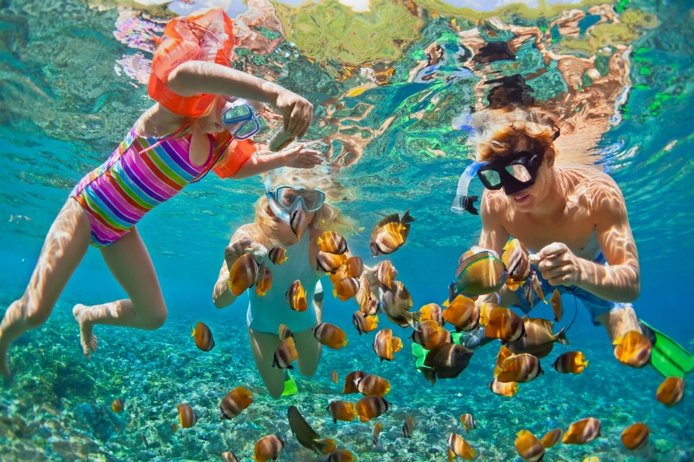
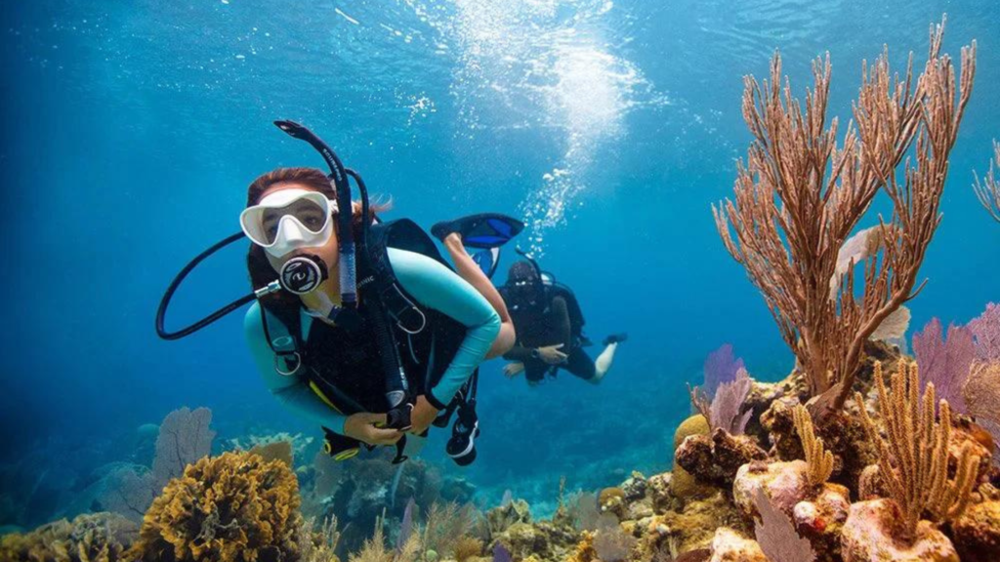
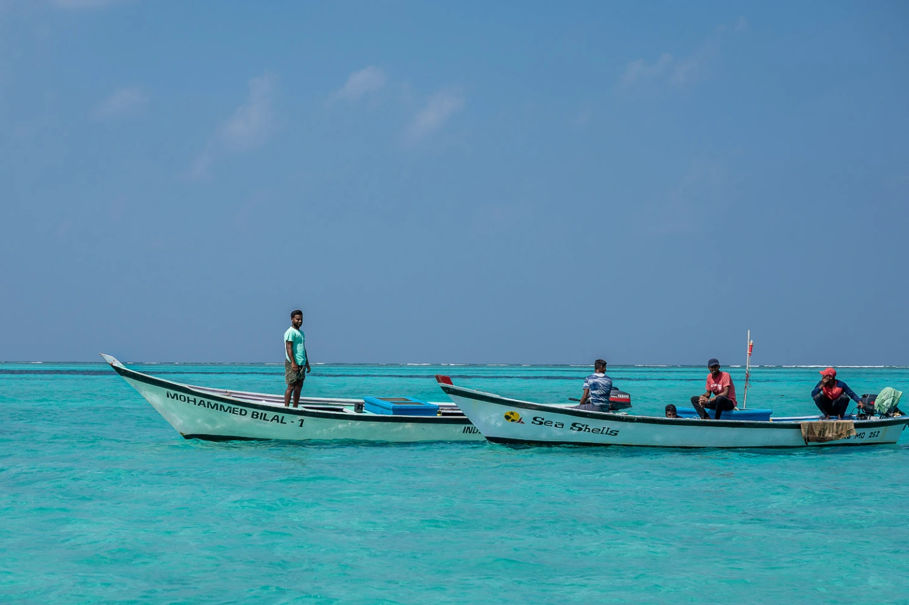
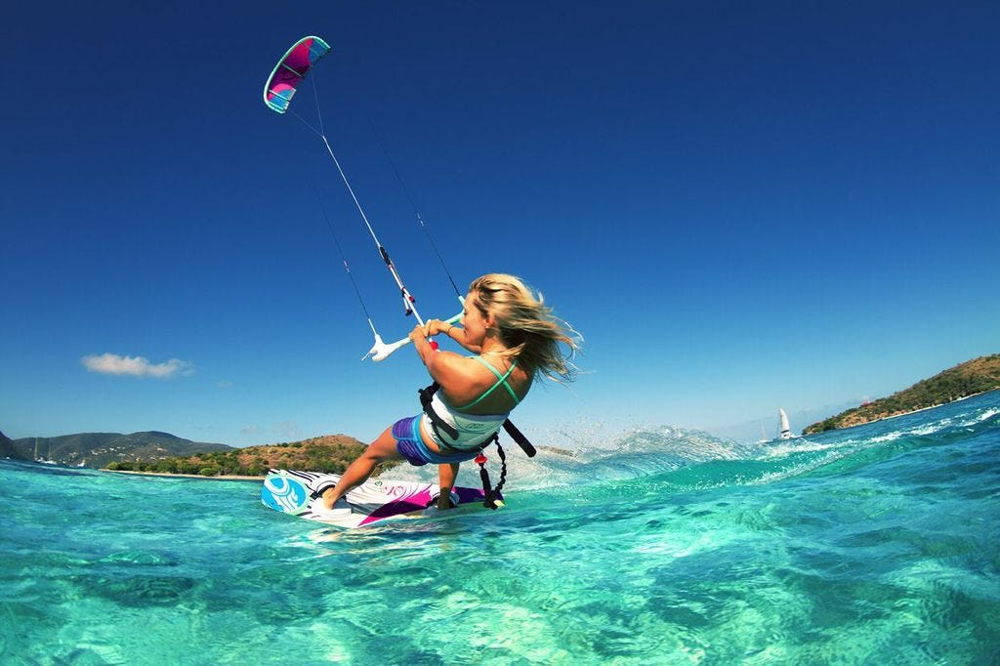

ACTIVITES
Snorkelling At Agatti Island

"Snorkeling at Agatti Island, part of the Lakshadweep archipelago, offers an immersive experience into its vibrant marine life. Best visited during the dry season from October to April, calm waters and clear skies prevail. Gear rental and guided tours are readily available, ensuring a safe and enjoyable experience. Popular sites like Agatti Coral Reef and Bangaram Island boast stunning coral formations and diverse aquatic species. Safety precautions include checking weather conditions and respecting marine life and ecosystems. Practice responsible snorkeling to preserve the delicate environment for future generations. Uninhabited islands like Parali and Thinnakara offer secluded spots for exploration. Overall, Agatti Island promises unforgettable encounters with its rich underwater world, making it a must-visit destination for snorkeling enthusiasts."
Scuba Diving At Kalpeni Island

"Scuba diving at Kalpeni Island, nestled within the Lakshadweep archipelago of India, presents an exhilarating opportunity to explore its underwater wonders. The dry season, spanning from October to April, offers the best conditions for diving with calm seas and clear visibility. Dive operators and resorts provide equipment rental and guided excursions, ensuring a safe and rewarding experience. Kalpeni Island boasts diverse marine life, including colorful coral reefs, tropical fish, turtles, and occasional encounters with larger species like sharks and rays. Safety protocols, such as checking weather forecasts and adhering to dive instructors' guidance, are essential for an enjoyable dive. Environmental conservation is paramount; divers should refrain from touching or damaging coral reefs and marine life to preserve the delicate ecosystem. Kalpeni Island's underwater landscape promises unforgettable adventures, making it a must-visit destination for scuba diving enthusiasts seeking to explore the beauty of the Indian Ocean."
Go Fishing At Kadmat Island

"Fishing at Kadmat Island in the Lakshadweep archipelago offers serene waters and abundant marine life. The dry season from October to April provides optimal conditions for angling adventures. Local guides and charters are available for expert assistance in finding the best fishing spots. Kadmat's waters teem with diverse fish species like barracuda, tuna, and snapper, catering to anglers of all skill levels. Responsible fishing practices are encouraged to sustain the marine ecosystem. Whether casting from shore or venturing into deeper waters, Kadmat Island promises memorable fishing experiences amidst breathtaking tropical scenery."
Kite Surfing

"Kite surfing, an exhilarating water sport, combines elements of surfing, wakeboarding, and kite flying. Participants use a large controllable kite to harness wind power, propelling themselves across the water's surface on a board. Ideal locations for kite surfing offer consistent winds and expansive stretches of water, such as beaches or lagoons. Safety is paramount, with participants using harnesses, helmets, and flotation devices, while also undergoing training to master kite control and safety techniques. Kite surfing can be enjoyed by individuals of varying skill levels, from beginners to advanced riders. Popular kite surfing destinations include Maui in Hawaii, Tarifa in Spain, and Cabarete in the Dominican Republic. The sport's dynamic nature allows for freestyle tricks, jumps, and aerial maneuvers, adding to the excitement and adrenaline rush. Environmental awareness is essential, with kite surfers respecting marine life and coastal ecosystems while minimizing their environmental impact. Overall, kite surfing offers a thrilling and immersive experience, blending the thrill of flying with the freedom of riding the waves."